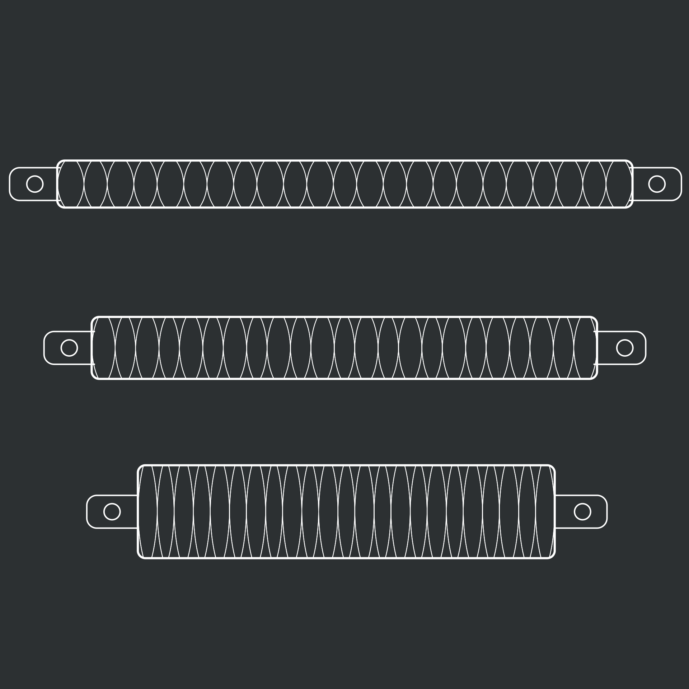

We became interested in this field through the many challenges and competitions within the robotics community and also have much experience in designing robots. After looking at current bipedal solutions we found that many are very difficult to control mechanically which has led to complex and elaborate algorithms to control the robot in software. We have decided to take a biomimetic approach to simplify the robot's mechanics and software.
Current muscles are usually pneumatically or hydraulically operated. An example of this type of actuator is the McKibben air muscle (Seen below). They use an internal bladder and external cylindrical mesh. As the bladder is inflated it expands. The mesh tries to keep the same length to width ratio and contracts. These actuators can self lock, have high power ratings and high efficiency. However, they are also very expensive and heavy. For a 210mm muscle it can cost 100$ for a cheap one. The pumping equipment is even more expensive again.
When taking a step the very first part is to shift your body forward. This results in a forward falling motion as the other leg is lifted off the ground. Many current robotic systems do not incorporate this 'dynamic'' technique into their locomotion. Using the most common method of direct driving each joint, the angle of the selected joint can be controlled. However with an artificial muscle the angle of the ankle and rate of your fall can be controlled or stopped accurately.
Our system operates by using a pair of antagonistic muscles. When both muscles are contracted equally, the joint stiffens and forms a rigid structure. When both are relaxed equally then the joint becomes a flexible structure. Although some solutions are capable of recreating these muscle properties, there are few dynamically capable of change the flexibility through a range of stiffness. To achieve this properties of elastic materials can be used in an artificial muscle.
